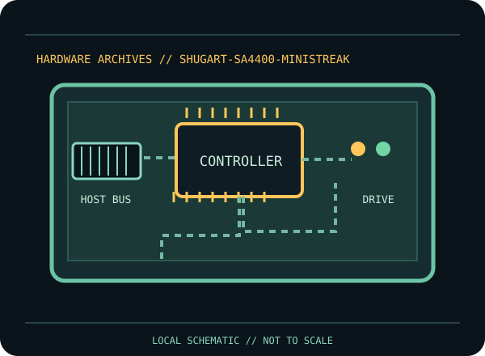

[ INDIVIDUAL COMPONENT // FLOPPY DRIVES ]
Shugart SA4400 MiniStreaker Floppy Controller
This record identifies a documented physical floppy drive, controller, or preservation interface. It separates confirmed model facts from details that vary by suffix, board revision, host, media and configuration.

IDENTIFICATION NOTE: Match the full model/part number, revision, connector and manual before use. Similar family names do not establish interchangeable mechanics or host compatibility.
Model specifications
| Catalog subcategory | Floppy controller cards |
|---|---|
| Exact model / family | Shugart SA4400 MiniStreaker |
| Era / product family | Shugart OEM microcomputer floppy controller, 1977 |
| Documented characteristics | Identified physical floppy controller product described in Shugart’s SA4400 OEM manual. The manual’s board/bus interface and supported mechanism configuration govern use; no generic PC card compatibility or capacity is inferred. |
| Interface / connectors | Use the SA4400 OEM manual to identify its host-bus connector, drive signals and supported configuration. It is a controller unit, not a disk drive or a generic 34-pin-to-USB adapter. |
| Host and media compatibility | Match the SA4400 revision and host bus to the documented drive and recording mode. Shugart SA-series family names do not guarantee that a drive/controller pairing has correct termination, select logic or data rate. |
Model-specific compatibility checks
- Identify the complete model/suffix, board revision, serial/date codes and connector arrangement from the physical unit; photograph all labels before installation.
- Match the SA4400 revision and host bus to the documented drive and recording mode. Shugart SA-series family names do not guarantee that a drive/controller pairing has correct termination, select logic or data rate.
- Confirm the host controller, drive wiring, power, drive select, termination, media density and recording format against the cited model documentation. Do not infer a fit or capacity solely from the drive size or connector shape.
Preservation and service notes
Consult the original OEM manual for setup and service. Record board assembly/revision, host system, drive model, terminations and test media; preserve original board configuration before repair or component replacement.
Keep original media and raw captures intact. Log the exact drive/controller/software configuration, acquisition date, condition and any service performed; checksum verified copies before creating derivatives.
Manufacturer documentation & sources
- Shugart — SA4400 MiniStreaker Floppy Controller OEM Manual (July 1977)Primary Shugart OEM product and service documentation for the controller.
Sources are model-specific manufacturer documentation or archival copies of the original source. Where a document covers a family or multiple revisions, confirm its applicability to the exact unit before using an electrical or service specification.